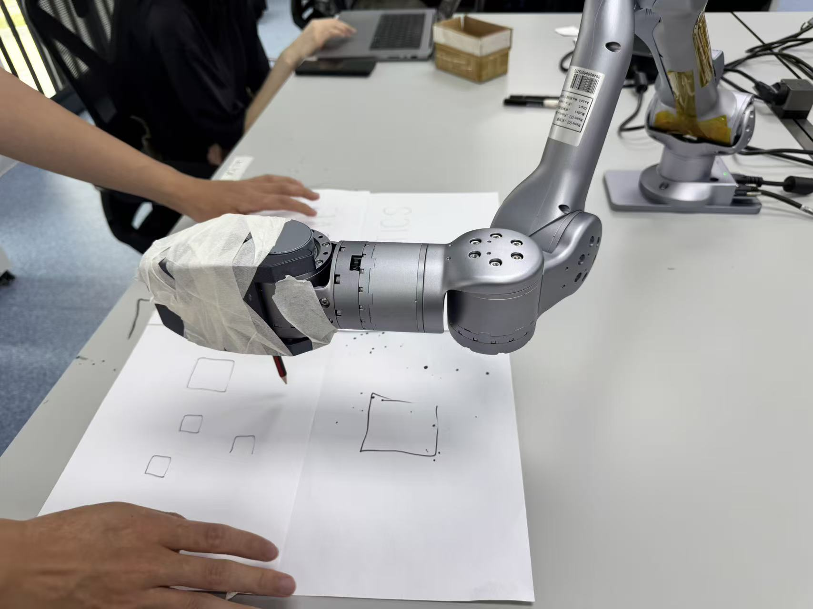
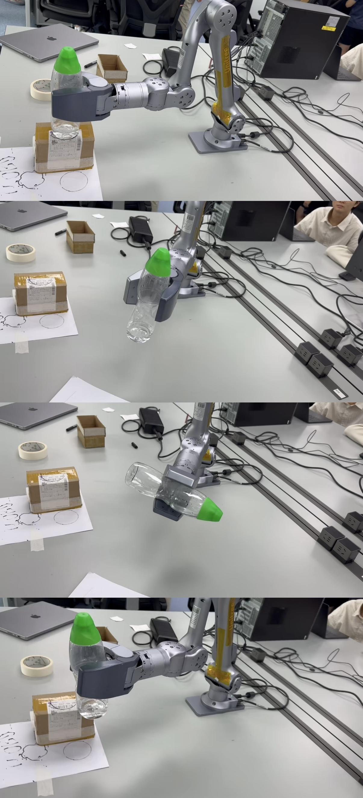

University Research: Advanced Robotics Laboratory (Manipulators)
As a core component of the "Advanced Robotics Laboratory" (034401) at GTIIT, I developed and implemented autonomous trajectory planning and control algorithms for the Unitree Z1, a 6-DOF robotic arm.
Project Objective
To master manipulator kinematics and program the arm to perform precise, autonomous tasks, including a "pick-and-place" cycle and high-accuracy path following (drawing).
Technical Implementation & My Work
Kinematics & Control Spaces
Mastered the control of the 6-DOF arm by programming in both Joint Space and Task Space (Cartesian). This involved applying Forward and Inverse Kinematics (FK/IK) to command the arm's end-effector to specific 3D coordinates and orientations.
Smooth Trajectory Planning
Implemented 3rd and 5th-order polynomial trajectories for motion planning. This theoretical approach ensured all motions were smooth (C¹ or C² continuous), starting and ending with zero velocity and acceleration, which is critical for preventing jerky movements and overshoot on the physical hardware.
Autonomous Pick-and-Place
Developed a complete, autonomous pick-and-place program. I used the Unitree z1_sdk to sequence a series of waypoints, commanding the arm to:
- Move to a pre-grasp position (using
MoveJfor efficiency) - Approach the object (using
MoveLfor a linear path) - Actuate the gripper to grasp
- Lift and move to a drop-off location
- Release the object and return to a home position

High-Precision Path Following
Programmed the arm to perform high-precision Cartesian path following by autonomously drawing a perfect square with an end-effector-mounted marker. This required maintaining a constant end-effector orientation (perpendicular to the drawing surface) while executing four precise MoveL (linear) commands.
Simulation & Deployment
Validated all motion planning and control logic within the ROS/RViz simulation environment before safely deploying and executing the autonomous programs on the physical Unitree Z1 robot.
